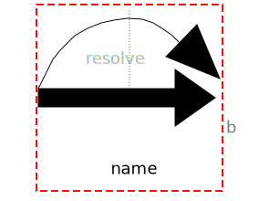
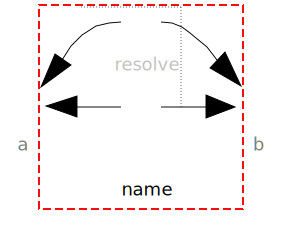

Components that exert forces and/or torques between frames
| Name | Description |
|---|---|
|
|
Obsolete model. Use instead Modelica.Mechanics.MultiBody.Forces.WorldForceAndTorque |
|  FrameForceAndTorque | Obsolete model. Use instead Modelica.Mechanics.MultiBody.Forces.ForceAndTorque |
|  ForceAndTorque | Obsolete model. Use instead Modelica.Mechanics.MultiBody.Forces.ForceAndTorque |